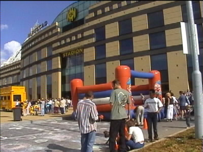
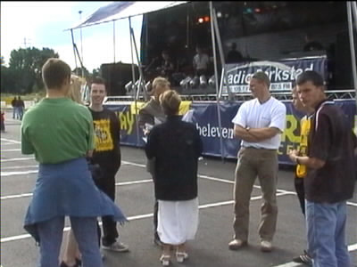
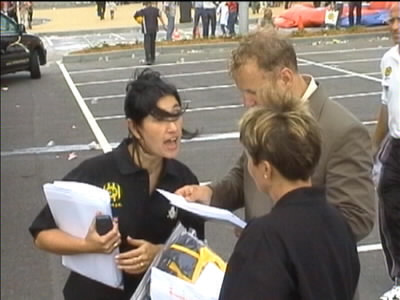
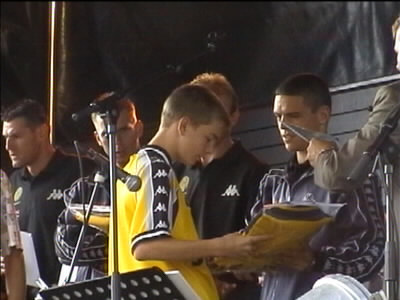
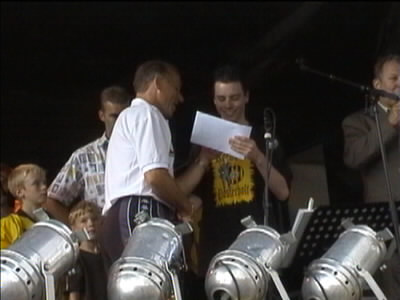

|
Open dag Roda JC 5 augustus 2001 |

De kinderen konden o.m. stoepkrijten en springen op enkele
springkussens. Ook kon je elektronisch je schotkracht meten.

Hier zien we Christie Dreezen-Dassen temidden van de vijf
winnaars van de voorspellingscompetitie.

Hier in overleg met Peggy Wetzels en Henk Frijns.

De nummer 5 ontvangt zijn prijs van Soetaers. De nummers
4, 3 en 2 ontvangen hun prijs van Vandenbroek, Luypers en
Kalac.

Winnaar met ruime voorsprong was Tim Meuwissen uit
Posterholt die hier van Jan van Dijk een tegoedbon krijgt
voor een ballonvaart in de Roda-ballon.